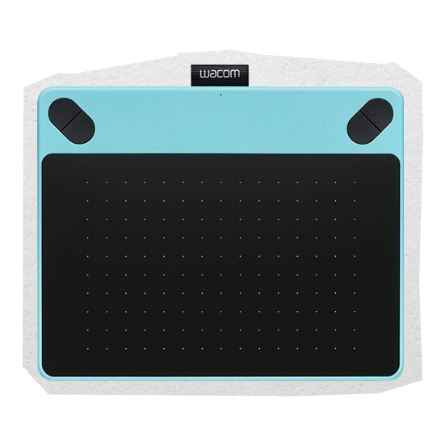
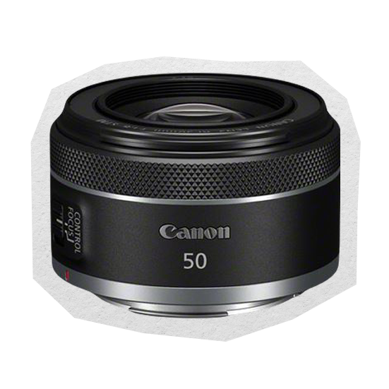
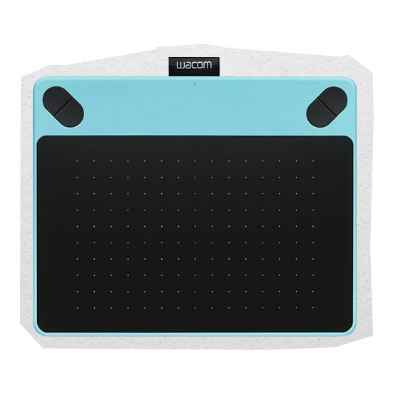
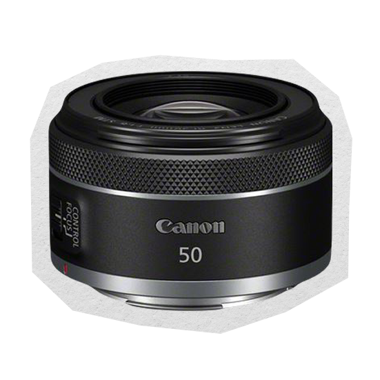
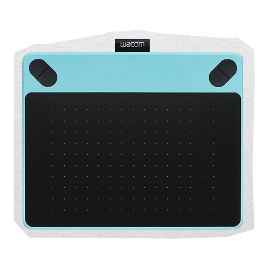
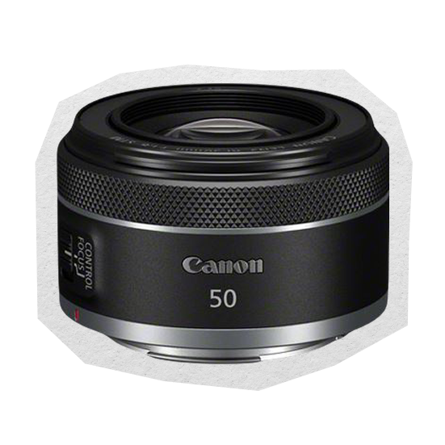

Wissale Benaicha
Portfolio


Portfolio
Salut ! Moi, c'est Wissale Benaïcha. J'ai 21 ans et je suis étudiante en deuxième année de B.U.T. Métiers du Multimédia et de l'Internet à l'IUT de Rouen. Avant ça, j'ai suivi deux années en licence LLCER Anglais. J'ai validé ma deuxième année, certes, et je comptais poursuivre ma troisième année, mais au fond, je sentais que ce n'était pas ce que je voulais faire. Alors j'ai pris mon courage à deux mains et j'ai décidé de changer de voie. Aujourd'hui, je me retrouve enfin dans un domaine qui me ressemble : la création. Que ce soit à travers le graphisme, la vidéo, l'écriture ou surtout la photographie, j'aime explorer, expérimenter, raconter.
Je possède des compétences polyvalentes allant du développement web (front et back) à la création graphique et audiovisuelle, ce qui me permet de concevoir des projets complets, à la fois visuellement soignés et techniquement solides.


Conception du front-end d'un site web fait sous HTML et CSS uniquement.
En savoir plusConception d'un site de gestion d’événements avec réservations fait sous PHP et MySQL.
En savoir plus